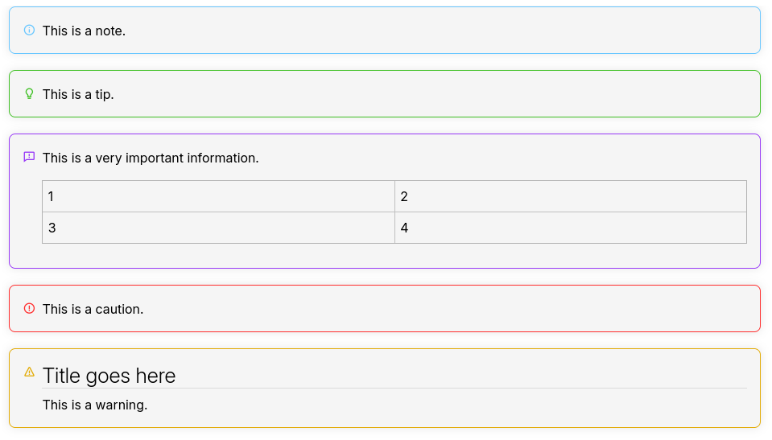

Admonitions

Admonitions are a way to highlight information to the reader. Other names for it include call-outs and info/warning/alert boxes.
Inserting a new admonition
From the UI
In the Formatting toolbar:

Via the keyboard
It's possible to insert an admonition simply by typing:
!!! note!!! tip!!! important!!! caution!!! warning
In addition to that, it's also possible to type !!! followed
by any text, case in which a default admonition type will appear (note)
with the entered text inside it.
Interaction
By design, admonitions act very similar to block quotes.
- Selecting a text and pressing the admonition button will turn that text into an admonition.
- If selecting multiple admonitions, pressing the admonition button will automatically merge them into one.
Inside an admonition:
- Pressing Backspace while the admonition is empty will remove it.
- Pressing Enter will start a new paragraph. Pressing it twice will exit out of the admonition.
- Headings and other block content including tables can be inserted inside the admonition.
Types of admonitions
There are currently five types of admonitions: Note, Tip, Important, Caution, Warning.
These types were inspired by GitHub's support for this feature and there are currently no plans for adjusting it or allowing the user to customize them.
Markdown support
The Markdown syntax for admonitions as supported by Trilium is the one that GitHub uses, which is as follows:
> [!NOTE]
> This is a note.
> [!TIP]
> This is a tip.
> [!IMPORTANT]
> This is a very important information.
> [!CAUTION]
> This is a caution.There are currently no plans of supporting alternative admonition syntaxes
such as !!! note.